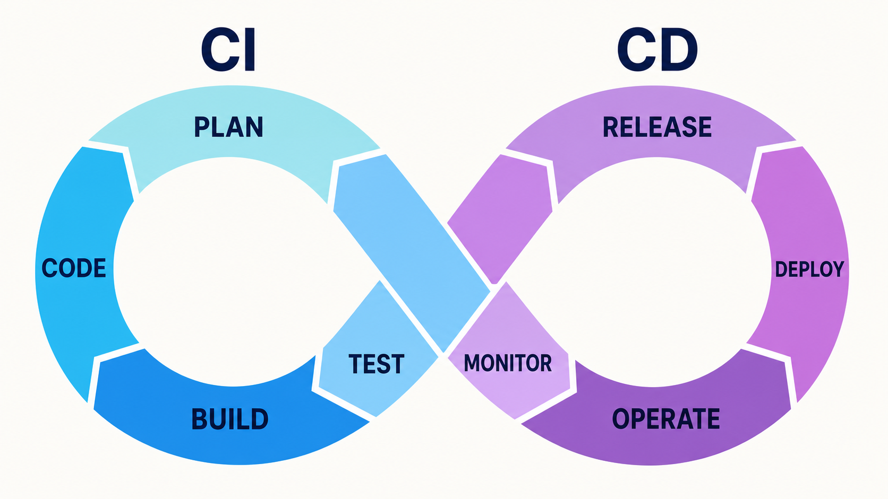

Уровень 17: CI/CD с GitHub Actions
На прошлом занятии мы вручную перенесли Products API на виртуальную машину Yandex Cloud. Теперь превратим те же действия в воспроизводимый конвейер.
После занятия вы сможете объяснить модель GitHub Actions, прочитать workflow-файл и собрать цепочку lint → test → build → deploy, в которой ошибка на любом этапе останавливает публикацию.
CI/CD — один непрерывный цикл изменений

Ручной деплой работает, но плохо повторяется
Вчера разработчик сам проверял код, подключался к серверу, обновлял репозиторий, пересобирал контейнеры и открывал health endpoint. Один раз это нормально. При каждом изменении — источник пропущенных шагов.
CI и CD отвечают на разные вопросы
| Часть | Вопрос | Что делает наш workflow |
|---|---|---|
| CI Continuous Integration | Можно ли безопасно объединить изменение с общей веткой? | Запускает Ruff, pytest и сборку Docker-образа |
| Continuous Delivery | Готова ли проверенная версия к публикации? | Доводит commit до состояния «можно деплоить» |
| Continuous Deployment | Можно ли сразу опубликовать проверенную версию? | После push в release-ветку обновляет Yandex Cloud VM |
Слово CD используют для delivery и deployment. Разница — остаётся ли перед production ручное подтверждение.
Pipeline — это цепочка ворот качества
быстрые дефекты кода
поведение приложения
собираемость контейнера
обновление production
Следующий этап начинается только после успешных предыдущих. Красный lint — это не «почти успешно»: build и deploy не запускаются.
GitHub Actions хранит автоматизацию рядом с кодом
Workflow лежит в .github/workflows/ci-cd.yml. GitHub читает этот файл из репозитория и создаёт отдельный run для подходящего события.
Словарь GitHub Actions
| Термин | Что это |
|---|---|
| Event | Событие, которое запускает workflow: push, pull request или ручной запуск |
| Workflow | Весь сценарий автоматизации из одного YAML-файла |
| Workflow run | Конкретный запуск workflow для конкретного commit |
| Job | Набор шагов, выполняемый на одном runner |
| Step | Одна команда shell или готовый action |
| Action | Переиспользуемый шаг, например checkout репозитория |
| Runner | Машина, на которой GitHub выполняет job |
| Secret / variable | Настройка, которую GitHub подставляет во время запуска |
Событие отвечает на вопрос «когда запускать»
on:
pull_request:
branches:
- release/render_0.1
push:
branches:
- release/render_0.1
workflow_dispatch:pull_requestпроверяет изменение до слияния.pushпроверяет уже появившийся в ветке commit.workflow_dispatchдобавляет кнопку ручного запуска, когда workflow уже находится в default branch.
Фильтр branches относится к целевой ветке pull request и к ветке, куда пришёл push.
Runner начинает каждый job с чистого окружения
jobs:
lint:
runs-on: ubuntu-latest
steps:
- uses: actions/checkout@v7- GitHub создаёт временную Ubuntu-машину.
checkoutпомещает нужный commit в рабочую директорию.- Локальная
.venv, запущенные контейнеры и файл.envтуда не попадают. - После job машина удаляется; следующему job нужно снова получить код.
uses подключает action, run выполняет команду
steps:
- name: Checkout repository
uses: actions/checkout@v7
- name: Set up uv
uses: astral-sh/setup-uv@v9
with:
enable-cache: true
- name: Install dependencies
run: uv sync --locked --devusesвызывает готовый компонент с определённым интерфейсом.withпередаёт action входные параметры.runвыполняет обычную команду в shell runner.--lockedзапрещает незаметно изменитьuv.lockвнутри CI.
needs превращает независимые jobs в pipeline
jobs:
lint:
...
test:
...
build:
needs:
- lint
- test
deploy:
needs:
- buildБез needs jobs по умолчанию могут стартовать параллельно. В нашем pipeline lint и test независимы и экономят время параллельным запуском. Build ждёт оба результата, deploy ждёт build.
Pull request проверяем, но не деплоим
| Событие | Lint | Test | Build | Deploy |
|---|---|---|---|---|
| Pull request в release-ветку | Да | Да | Да | Нет |
| Push в release-ветку | Да | Да | Да | Да |
| Ручной запуск release-ветки* | Да | Да | Да | Да |
| Push в другую ветку | Нет | Нет | Нет | Нет |
* Кнопка ручного запуска появляется после того, как файл workflow существует в default branch; при запуске можно выбрать release-ветку.
Код pull request может быть недоверенным. Job с production-секретами не должен выполняться для произвольной ветки.
Lint дёшево ловит дефекты до тестов
uv run ruff check app testsRuff анализирует Python-код без запуска приложения. В проекте включён небольшой baseline:
[tool.ruff]
target-version = "py314"
[tool.ruff.lint]
select = ["E4", "E7", "E9", "F"]E4/E7/E9— ошибки структуры, синтаксиса и отступов.F— неопределённые имена, неиспользуемые импорты и другие явные ошибки.
Строгие правила добавляют постепенно: сначала исправляют старый код, затем делают новое правило обязательным.
Тесты проверяют поведение Products API
uv run pytestНаши fixtures создают временную SQLite-базу и подменяют внешние зависимости. Поэтому unit- и API-тестам в GitHub Actions не нужны запущенные PostgreSQL, MongoDB, Redis и RabbitMQ.
services или Docker Compose в отдельном job.Build доказывает, что Dockerfile действительно собирается
build:
name: Build Docker image
needs:
- lint
- test
runs-on: ubuntu-latest
steps:
- uses: actions/checkout@v7
- name: Build image
run: docker build --tag products-api:${{ github.sha }} .- Тег содержит SHA commit — точный идентификатор версии.
- Build проверяет инструкции
FROM,COPYиRUN uv sync. - В учебном варианте образ не отправляется в registry: production VM пересобирает его из того же commit.
Deploy повторяет вчерашний сценарий через SSH
GitHub не «телепортирует» приложение в облако. Runner подключается к уже подготовленной VM, выполняет знакомые команды без интерактивного ввода, а затем проверяет API снаружи VM.
Код обновляется, серверные данные остаются на VM
| Обновляет pipeline | Не хранит в Git и не перезаписывает |
|---|---|
| Исходный код нужного commit | Production-файл .env |
| Docker-образ приложения | Docker volumes PostgreSQL, MongoDB, Redis и RabbitMQ |
Контейнеры из docker-compose.yml | SSH private key |
| Миграции Alembic при старте backend | Настройки сети и самой VM |
.env уже исключён из Git. Файл с настройками, названный IP-адресом VM, тоже нужно игнорировать: другое имя не делает секрет безопасным.
Secrets и variables разделяют чувствительные и обычные настройки
| GitHub Environment: production | Имя | Назначение |
|---|---|---|
| Secret | SSH_PRIVATE_KEY | Закрытый ключ для подключения runner к VM |
| Secret | SSH_KNOWN_HOSTS | Доверенный публичный host key сервера |
| Variable | DEPLOY_HOST | Публичный IP или DNS-имя VM |
| Variable | DEPLOY_USER | Linux-пользователь деплоя |
| Variable | DEPLOY_PATH | Каталог репозитория на VM |
.env остаётся только на сервере. Его содержимое не нужно копировать в workflow.Deploy key даёт автоматике отдельный доступ
На доверенном компьютере создайте отдельную пару ключей без passphrase:
ssh-keygen -t ed25519 \
-C github-actions-deploy \
-f github-actions-deployПубличный ключ github-actions-deploy.pub добавьте на VM в ~/.ssh/authorized_keys. Закрытый ключ сохраните как SSH_PRIVATE_KEY в GitHub Environment.
Получите host key сервера и проверьте его fingerprint по доверенному каналу:
ssh-keyscan -H SERVER_IPПроверенную строку сохраните как SSH_KNOWN_HOSTS. Workflow использует StrictHostKeyChecking=yes, поэтому не подключится к серверу с неожиданным ключом.
Environment ставит границу вокруг production
- Откройте Settings → Environments → New environment.
- Создайте environment с именем
production. - Добавьте два secrets и три variables.
- При необходимости включите required reviewers и ограничьте deployment branch.
environment:
name: production
url: http://${{ vars.DEPLOY_HOST }}:8000/docs
concurrency:
group: production
cancel-in-progress: falseEnvironment выдаёт production-секреты только deploy-job. concurrency не позволяет двум деплоям одновременно менять одну VM.
Workflow, часть 1: имя, события и минимальные права
name: Products API CI/CD
on:
pull_request:
branches:
- release/render_0.1
push:
branches:
- release/render_0.1
workflow_dispatch:
permissions:
contents: readWorkflow нужен только доступ на чтение к содержимому репозитория. Он не создаёт commits, releases или packages, поэтому выдавать права записи не требуется.
Workflow, часть 2: lint и test
jobs:
lint:
runs-on: ubuntu-latest
steps:
- uses: actions/checkout@v7
- uses: actions/setup-python@v7
with:
python-version: "3.14"
- uses: astral-sh/setup-uv@v9
with:
enable-cache: true
- run: uv sync --locked --dev
- run: uv run ruff check app tests
test:
runs-on: ubuntu-latest
steps:
- uses: actions/checkout@v7
- uses: actions/setup-python@v7
with:
python-version: "3.14"
- uses: astral-sh/setup-uv@v9
with:
enable-cache: true
- run: uv sync --locked --dev
- run: uv run pytestJobs намеренно разделены: оба стартуют параллельно, а в GitHub UI сразу видно, какой тип проверки упал.
Workflow, часть 3: build после двух зелёных jobs
build:
name: Build Docker image
needs:
- lint
- test
runs-on: ubuntu-latest
steps:
- uses: actions/checkout@v7
- name: Build image
run: docker build \
--tag products-api:${{ github.sha }} .github.sha берётся из контекста запуска. Это SHA проверяемого commit, а не произвольная строка, введённая пользователем.
Workflow, часть 4: deploy только из release-ветки
deploy:
needs: [build]
if: >-
github.ref == 'refs/heads/release/render_0.1' &&
(github.event_name == 'push' ||
github.event_name == 'workflow_dispatch')
runs-on: ubuntu-latest
environment: production
concurrency:
group: production
cancel-in-progress: falseУсловие не разрешает deploy из pull request и другой ветки. Перед запуском job GitHub применяет правила environment production.
Deploy-job готовит SSH и запускает серверные команды
- name: Configure SSH
env:
SSH_PRIVATE_KEY: ${{ secrets.SSH_PRIVATE_KEY }}
SSH_KNOWN_HOSTS: ${{ secrets.SSH_KNOWN_HOSTS }}
run: |
install -m 700 -d ~/.ssh
printf '%s\n' "$SSH_PRIVATE_KEY" > ~/.ssh/deploy_key
chmod 600 ~/.ssh/deploy_key
printf '%s\n' "$SSH_KNOWN_HOSTS" > ~/.ssh/known_hosts
- name: Update services and verify health
run: |
ssh -i ~/.ssh/deploy_key USER@HOST \
"cd PATH &&
git fetch origin BRANCH &&
git merge --ff-only origin/BRANCH &&
docker compose up -d --build --wait &&
curl --fail http://127.0.0.1:8000/api/v1/health"В настоящем файле USER, HOST и PATH берутся из environment variables, перед Compose проверяется точный SHA commit, а отдельный step обращается к публичному health endpoint.
Один push проходит четыре наблюдаемых состояния
- GitHub создаёт run и параллельно запускает Lint и Test.
- После двух успехов запускается Build Docker image.
- После build GitHub открывает доступ к environment production.
- Runner подключается к VM, обновляет services и проверяет health endpoint сначала локально на VM, затем по публичному адресу.
Для диагностики откройте Actions → CI/CD → нужный run → нужный job. Каждый step хранит отдельный журнал и exit code.
Ошибка останавливает pipeline в правильном месте
| Где упало | Что это обычно означает | Что не запустится |
|---|---|---|
| Lint | Синтаксис, неопределённое имя, неиспользуемый import | Build и deploy |
| Test | Регрессия поведения или неправильный fixture | Build и deploy |
| Build | Ошибка Dockerfile, lock-файла или установки зависимостей | Deploy |
| SSH | Ключ, пользователь, host key, firewall или выключенная VM | Сервер не меняется |
| Compose | Сервис не стартовал или зависимость unhealthy | Health check |
| Health check | Контейнер запущен, но API не готово отвечать | Run становится красным |
Практика: запускаем первый CI/CD run
- На VM убедитесь, что репозиторий находится на ветке
release/render_0.1, Docker Compose запускается безsudo, а production.envлежит в корне проекта. - Создайте deploy key и добавьте публичную часть в
authorized_keys. - Создайте GitHub Environment
production, добавьте secrets и variables. - Закоммитьте
pyproject.toml,uv.lockи.github/workflows/ci-cd.yml. - Сделайте push в
release/render_0.1и проследите переходlint/test → build → deploy. - Откройте URL environment и убедитесь, что Swagger UI и health endpoint доступны.
- Временно сломайте тест в отдельной ветке и проверьте, что pull request не доходит до deploy.
Rollback должен возвращать известный commit
Автоматический deploy ускоряет публикацию, но не отменяет план возврата. Простейший учебный rollback — вернуть release-ветку к исправляющему commit через обычный git revert и снова пройти pipeline.
git revertсохраняет историю и создаёт новый commit.- Миграции базы данных требуют отдельной backward-совместимой стратегии.
- Docker volumes не откатываются вместе с исходным кодом.
Что важно запомнить
- CI проверяет изменение, CD доставляет проверенную версию дальше.
- Workflow состоит из events, jobs и steps; runner выполняет каждый job в чистом окружении.
needsзадаёт порядок и не пропускает ошибку к deploy.- Pull request запускает проверки, но не получает production-секреты.
- Секреты хранятся в GitHub Environment, production
.envостаётся на VM. - Deploy завершён только после внешней или серверной проверки health endpoint.
- Наш первый pipeline:
Ruff → pytest → Docker build → SSH + Compose + health.
Источники: GitHub: Understanding Actions, GitHub: Workflow syntax, GitHub: Jobs and needs, GitHub: Manual run, GitHub: Secrets, GitHub: Environments, GitHub: Secure use, actions/checkout, actions/setup-python, uv: GitHub Actions, Ruff linter, Docker: GitHub Actions, Docker Compose up.